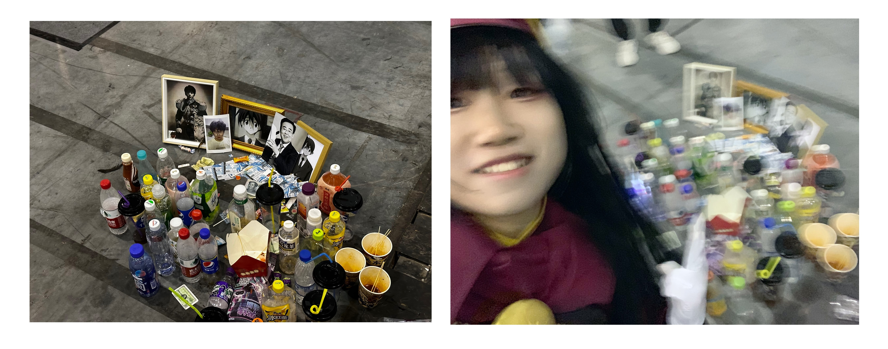

呐！你好呀~
我是香喷喷、软邦邦、长长的一根
法式麸质长杆冷兵器！
可以叫我法棍！嘿嘿！……？为什么叫法棍，因为喜欢那个叫亚诺的刺客hm（
是个死宅 /尝试登入cos大舞台的咸鱼 /持C2的车圈水货 /「命中注定」学俄语的 /好羡慕美美的音乐剧 /对Java苦大仇深的C#见习 /热衷辩唯物 /红旗维护众，男性自我认同异性恋(1/4)，偶尔搂一眼SNL，追番少所以不是老二次元，与歌喉无缘的烂嗓子(呜)，平常比较喜欢闷想(由此对一些语言等文科向有点奇怪的土特产见解 草)
生命中如果要矮子里面拔高个地找特长的话，可能就是我会写一点文字？会吹一下sax？能写个网页？好像也没什么了！（超级羡慕会画画的会化妆的出cos美美的帅帅的唱歌好听的还有魔鬼声优etc 对于这类我可以说是愿意吐脯以待了！）
+ 雷点可能比较大众，但是不雷mihoyo!(只是“不雷”而已!!!)
然后我其实，长得怎么样，我自己不好说…看吧……
.JPG) 自拍苦手
自拍苦手
等一下，这就是女孩子叭？但是这就是我，我觉得我是男孩子 (叉腰) (理直气壮)
我真的会恋上温柔细致的女孩子……然后我也会很乖地把脸交给她们去画（但是即便如此我也还是坚持要自己abled to make-up myself）这里必须提到我个人感觉最亏欠的姐姐--【佞袖】小姐 (呜)
这位爷 袖姐姐是陪伴我迄今为止（2024年1月15日）唯二两次出C并负责这两次妆造的伟大艺术家（点头）
不过很不巧的是我真的太飞舞辣！一直觉得自己做过的一些事一些也没多大但是也不小的错误非常对不起她(呜呜)
.JPG) 《背影》
《背影》
其实大可以把我当作可爱的男孩子，或者单纯的女孩子，只要是二元性别就好 (官方建议当作男孩子)
+ 我自认为我是趋于严谨、中庸的一个人，所以我在一些本来就不是很所谓的地方非常宽松，但是红线就是红线，伸手就要抓。
+ - 比如说，我不会在意你用什么名字1称呼我（有个叫花澪的灾舅子甚至因为我在某群的群名片叫「酷安用户@DecemberTech」而直接喊我酷安了，即便他知道我cn是法棍）
但是倘若你用很明显带着攻击性的词语称呼我，那就等着被我反制裁罢(无慈悲)。
- 补充一下，我个人认为“严谨”就应该是包含着「该松就松，该紧就紧」作为Principal之一的。如果什么都卡得死死的，我觉得那叫死板。
那么好像可以稍微详尽介绍一下爱好了呢！
+ 影视类
+ - 其实很少有追什么看啦……番也就是单刷过：《黑之契约者》、《黑之契约者OVA》、《黑之契约者：流星双子》、《暗杀教室》、《暗杀教室2》、《孤独摇滚！》、《工作细胞》、《工作细胞BLACK》、《工作细胞2》、《犬夜叉》、《Fate留下来过夜(?UWB)》、《卫宫家今天的饭》、《RWBY(1-7)》、《少女终末旅行》、《幸运星》、《Jojo黄金之风》、《Jojo不灭钻石》… 呃 屈指可数(确信)
+ - 然后就是有些别的，偶尔看一眼SNL？欧美剧是基本不看的，日韩剧也是，国产剧可能就是在家里蹲在客厅里陪爹妈唠嗑顺便搂一眼，电影也很少看：可能刷的最多的就是成龙，某些大年初一上映的也看，最受触动的电影大概也就《放牛班的春天》、《胡迪尼》《超脱》《钢琴师》(Adrien Brody) 电影之外就是纪录片咯，《空中浩劫》、《我住在这里的理由》，还有一些国内考古的纪录片也有零星地看。（桑哥解说的守护法兰西算纪录片吗?）
+ - 其实我觉得亚文化圈视频站上我常看的也可以归类在这里！不过还是分up主来列一些吧awa：常看的 小约翰(死耗子更新哭墙不算更新!)、沃玛(可爱!!)、杂货铺(掌柜是飞行员那个)、藻虾(在日留学拍车佬)、11区小豪(但是有的房型我真的喜欢欸)、列克星敦太太(贤良淑德！)、Chubbyemu、迷幻枸杞、oooooo(hmygosh); [此外还有些分类的比较常看：%和我玩的游戏相关%、美警执法记录、(更多)历史类、数码资讯、汽车区等]
+ 音乐? 干嘛和影视类分开 我也不知道awa
+ - 一般来说 听顺耳的都会扒拉到我Apple Music资料库里（。甚至摇滚/华语流行 听对味了加上歌曲本身没有特别怪的也会加资料库）
+ - 流派来分的话，雷鬼/Citypop/古典/音乐剧/红歌(全世界的)/美国乡村(有一部分除外2)/世界民歌 ...
+ - 也有喜欢的艺术家/歌手/声音，蔡琴、ZUN、Azis、亚历山德罗夫、Johnny Cash、张学友、ЛЮБЭ、Luis Fonsi、King's Singers、Hoyo-MiX、雷军
+ - 很少主动去听术力口，但是也还是有几首喜欢的。此外听一些车万曲><
+ - 曾经听过EXO
+ 游戏！
+ - 首先，我是"原批"3。
+ - 游戏的选择方面，一般而言我喜欢选沙盒，或者控制自己的小人四处跑、自由度比较高的那种嗯(恐怖类除外)。所以我现在主玩的也就是：
+ - = GTAOL(2000h+)、叛乱-沙漠风暴(150h+)、Project Zomboid(700h+)、NMRiH、左边四个死了俩、Minecraft(5000h+)、Forza Horizon5(500h+)、人类一败涂地、七天去死(草)
+ - 刚才这些都是多人向的，接下来的就是我比较喜欢的可可爱爱单人游戏，或者多人没人陪我玩的：
+ - = 光·遇(steam)、Watch_Dogs、WD2、WD Legion、AC(Ezio Trilogy)、AC Unity(可劲白嫖育碧嗷)、AC Syndicate、Townscaper、MyDreamSetup、Superhot、ICEY、Superliminal、the White Door、烟火&三伏
+ - 还有一些正在尝试的：
+ - = Squad、BF2042、恐鬼症、消光(1)
+ - 以及个别我有了但是我基本不主动玩的(多人游戏)：
+ - = Goose Goose Duck & Amongus、CS、BF1&5、HALO、星露谷、RainbowSix Siege、昆特牌、Apex Legends、方舟生存进化、欧卡模拟
+ - 以上个别游戏标注了至2024年1月15日为止的游戏时长（。）
+ 其他
+ - 我是趋向辩证唯物主义的所以 嗯！这些方面会有思考（。
+ - 我比较喜欢嚼嚼语言，目前可用语言是 汉语、英语、俄语
+ - 最喜欢的高级语言是C#！
关于近期我在干嘛 @{2024年1月15日}
其实应该说，最近以及未来计划学习什么，其次才是干什么（做出点什么事）。
也就是继续学俄语，然后想要到俄罗斯之后学法语，回来之后学阿拉伯语，抽空摸一下拉丁语；
目前感觉最抽象的不是英语比别的语言简单那么多，而是 为什么我学俄语还促进了我英语本来烂成一滩的语法啊！！(其中固然是有我的“解释型”学俄语方式的影响的4)
然后吧，给自己开的坑真的太多了，还是着眼于如何把我的博客框架Sharlog5写出来好了。。。
而且比较墨迹，还有许多Corona Studio6的工作————
还要学化妆还要学伪音我想要试着独自一人出一次c……
啊啊、在追求美好的路上疲于奔命。。。

不过还干过这种事hhh (2023/8/5? 成都#世界线)
自设
有一个可可爱爱的自设！本来是照着荧妹做的，然后莫名其妙给自己脑袋上加了片叶子，恰好为了风格化，金发定下来得比较偏橙色，于是我变成了一个橘子。
 画师： bili@到野宇宙歌唱
画师： bili@到野宇宙歌唱